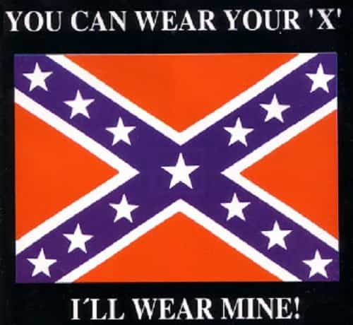

Lynyrd Skynyrd gave a concert at Oakland—July 2, 1977—part of their Street Survivors Tour. Three of their songs, including their iconic closing number ‘Free Bird’, are captured on video. They returned on Independence Day for another show.
They left here tomorrow, but we still remember
Tragedy would strike soon. On October 20, their plane crashed, killing three band members. The pilots died as well, also one of the managers. The other passengers were hospitalized. Although it’s grim to contemplate what would happen less than four months later, the video is actually a touching testament to their lives. The band’s enthusiasm is powerful, likewise the crowd in the packed stadium.
It’s also a poignant memory of the America that once was. By today’s standards, the audience was unbelievably normal. Musical genres often attract a specific demographic, and ticketholders are self-selected. Therefore, this wasn’t a completely representative sample of the local population. Still, the contrast between then and now is stunning.
The fans were young Baby Boomers, a generation often considered flawed (though Millennial snowflakes are getting a worse rap). This was 1977, the embarrassingly inept Carter Presidency’s first year. Hippies were still around, though falling out of fashion. That decade was somewhat tacky and weird (though charmingly innocent by today’s standards). Still, you certainly couldn’t tell from this footage!
A sea of unadorned beauty
These types were nowhere to be seen. (Yes, the lower left is what you think it is. Further “details” below not shown.)
Many young ladies gathered near the stage. (Perhaps they liked the looks of the musicians even more than their songs!) Typically hair was below shoulder length, and none chopped short like a diesel dyke. There certainly were no shaved heads or Skrillex cuts (both were punishments for adultery in ancient times). Not a single one had weird colored hair like a clown. I couldn’t tell if any of them had dye jobs; any who did stuck to natural colors and touched it up well.
None were pierced up like pincushions. Facial ironmongery was completely absent; not even a single bull ring through the nose. The ladies certainly weren’t inked up like sailors. I noticed only two tattoos—one of the band members, and the guy toward the end smooching his cutie as the show closed.
Concerning body types, nobody was even near the chub zone. None had a heroin chic appearance either, which gay fashion designers like to promote these days. (I’ll give a potential girlfriend a break for some extra meat on her bones within reason, though beyond a certain point, she’d better have a stellar personality and be a freak in bed.) Still, I must say, those concertgoers really hit the sweet spot with graceful curves.
None of them were glued to smartphones—those didn’t exist then, but it’s a refreshing break. Makeup was tasteful—no Tammy Faye pancakes or clownish styles—and I suspect most were just that beautiful without needing it. They were well-dressed too. Many wore bikinis, but the effect was still wholesome. All told, they radiated maidenly charm and innocence, almost angelic.
So normal it seems unreal
There weren’t any guys like this either. Actually, I’m not quite sure what some of these specimens are.
The guys in the audience tended to be modestly buff, no beach ball bods. Were they all into the recent jogging and health food fads? No, that’s simply how most people were. The guys in the audience looked pretty straight-laced; except the two at the very end passing a joint. The band members were longhaired and a bit edgier. (Some occasionally had major substance abuse fuckups, unfortunately rather common for celebrities.) This could’ve been called the Ivory Soap concert, for one reason because it was 99.44% pure.
Again, the audience wasn’t an exact cross-section of the local population. Oakland actually did look like that prior to WWII, though demographics had changed much by 1977. Since then, the “gringo” population has fallen by about half, much like Philadelphia. Oakland is considered among the USA’s most diverse cities. (Whether that was an improvement is certainly a matter of opinion.)
Reagan won California’s numerous electoral votes three years later, but it’s been a blue state ever since. Ted Kennedy’s strategy of stuffing the ballot box through population replacement immigration really got results. Could a Dixie rock band fill Oakland’s Coliseum like that now, with enough interested locals remaining for a repeat act two days later?
Most think of mid-1970s California as still being jam-packed with hippies. However, the “square” culture actually constituted the majority, although the counterculture is better remembered today. This was so even during the late 1960s. Male hippies did resemble cavemen with love beads, and were notoriously allergic to soap. However, the female hippies usually had a pretty wholesome appearance, and at least slathered on the patchouli. Both sexes of today’s imitators, the hipsters, look like Martians.
You might suspect the audience was from some pristine corner of Eastern Europe, as yet unspoiled by degeneracy. No, this was America, nearly 41 years ago. I couldn’t help shedding a tear, much like the American Indian surrounded by litter in the public service announcement from those times. My country got trashed too.
The rebel flag

If Malcolm X regalia and the like is OK, then why not this?
The Confederate battle flag was prominently displayed at the back of the stage, about 25 feet across. It was nothing remarkable back then. However, during the 1990s, the climate of persnickety political correctness started making people mighty prickly about that. Lately, it’s been removed as a design element in some Southern state flags. A rock band displaying a large Confederate battle flag today, near the buckle of the Granola Belt, would run great risk of setting off a tectonic level of triggering. In fact, that might touch off the Big One and cause California to sink underneath the ocean.
Why all the recent fuss? Today, General Lee’s emblem often means no more than Southern heritage, with a streak of rugged independence. However, to some degree, it’s become an unofficial symbol for White pride. Well, we can’t have that, now can we?
Marcus Garvey’s Pan-African flag—red, black, and green—explicitly symbolizes armed struggle by Blacks for the African homeland. (You’ll see a lot of those at reggae concerts.) Several flags in Africa are similar to this design; including the militant meaning (Kenya’s even features crossed spears and a shield). Some other flags have dissimilar designs, but likewise use the color black in an explicitly racial context.
This isn’t controversial, and I don’t mind either. I’m also fine with the Malcolm X clothing designs that once became quite popular. It’s not time to get rid of the rebel flag, but rather the rotten double standards.
The once and future Western civiliation
So California is the chief state of the Left Coast. Still, it was pretty normal once, and even had a conservative majority. Right across the bay from Oakland is San Francisco, which itself retains a certain charm although suffering from toxic granola levels, among other peculiarities. Back then, the nuttiness was mainly confined to neighborhoods like Haight-Ashbury. Other than those, San Francisco wasn’t yet all pozzed out, but soon would be, and also in a literal sense.
So the video shows what normal America looked like four decades ago, before cultural Marxism and degeneracy reached peak convergence. Unfortunately, the infection began spreading across the USA and far abroad too. Although it won’t be easy, it’s time to start getting back to normal, and the sooner the better.
Read More: Western Society Has Become Completely Inverted